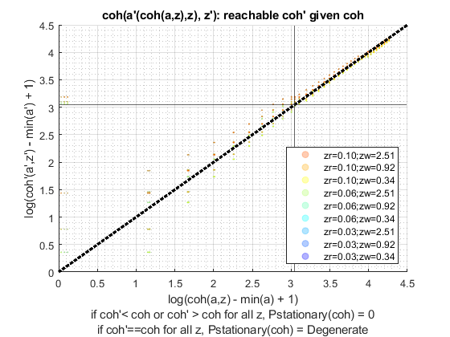
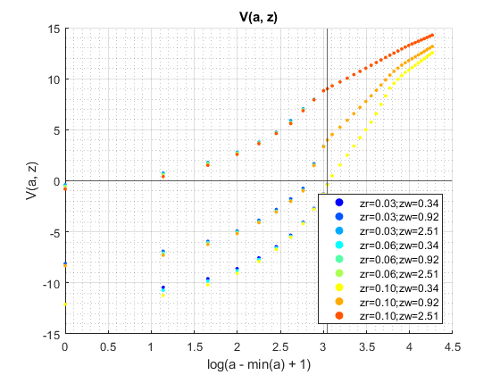
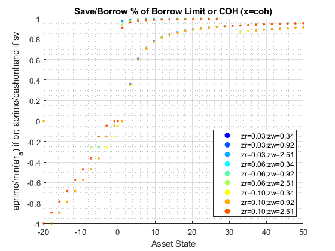
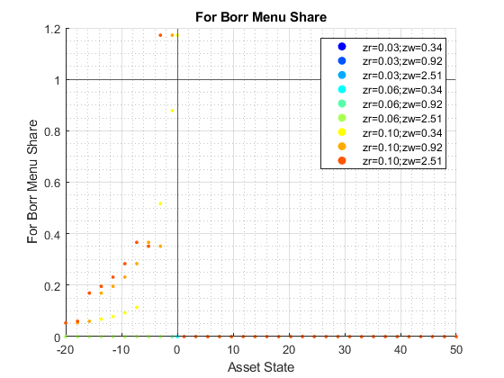
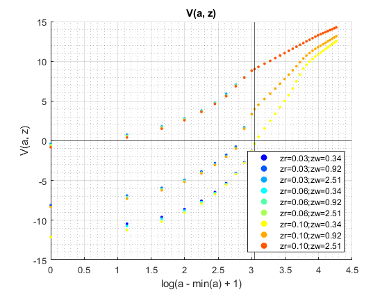
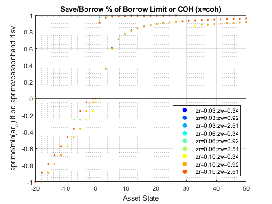
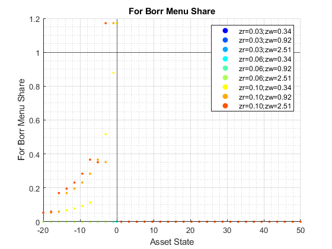

Solve For+Inf+Borr+Save+RShock Dynamic Programming Problem (Loop)
back to Fan's Dynamic Assets Repository Table of Content.
Contents
- FF_ABZ_FIBS_VF borr + save one asset formal informal + loop
- Default
- Parse Parameters 1
- Parse Parameters 2
- Initialize Output Matrixes
- Initialize Convergence Conditions
- Iterate Value Function
- Iterate over a and z states
- Compute Consumption given Borrowing and Savings
- Compute Utility With Default
- Store Values
- Optimize over Next Period Asset Choices
- Find Optimal Choices for Defaults or Not
- Store Optimal Choices and Value Given(a,z)
- Check Tolerance and Continuation
- Process Optimal Choices
- Post Solution Graph and Table Generation
- Display Various Containers
- Display 1 support_map
- Display 2 armt_map
- Display 3 param_map
- Display 4 func_map
- Display 5 result_map
function result_map = ff_abzr_fibs_vf(varargin)
FF_ABZ_FIBS_VF borr + save one asset formal informal + loop
This program solves the infinite horizon dynamic single asset and single shock problem with loops. This file contains codes that processes borrowing and handles formal and informal choices. With R Shock.
@param param_map container parameter container
@param support_map container support container
@param armt_map container container with states, choices and shocks grids that are inputs for grid based solution algorithm
@param func_map container container with function handles for consumption cash-on-hand etc.
@return result_map container contains policy function matrix, value function matrix, iteration results, and policy function, value function and iteration results tables.
keys included in result_map:
- mt_val matrix states_n by shock_n matrix of converged value function grid
- mt_pol_a matrix states_n by shock_n matrix of converged policy function grid
- mt_cons matrix states_n by shock_n matrix of optimal consumption levels, unlike modele without formal and informal choices, where we know c from coh and a, here this needed to be stored because it is the results from with joint category maximization problem.
- ar_val_diff_norm array if bl_post = true it_iter_last by 1 val function difference between iteration
- ar_pol_diff_norm array if bl_post = true it_iter_last by 1 policy function difference between iterations
- mt_pol_perc_change matrix if bl_post = true it_iter_last by shock_n the proportion of grid points at which policy function changed between current and last iteration for each element of shock
@example
@include
@seealso
- for/inf + save + borr loop: ff_abzr_fibs_vf
- for/inf + borr vectorized: ff_abzr_fibs_vf_vec
- for/inf + borr optimized-vectorized: ff_abzr_fibs_vf_vecsv
Default
- it_param_set = 1: quick test
- it_param_set = 2: benchmark run
- it_param_set = 3: benchmark profile
- it_param_set = 4: press publish button
it_param_set = 4; [param_map, support_map] = ffs_abzr_fibs_set_default_param(it_param_set); % Note: param_map and support_map can be adjusted here or outside to override defaults % To generate results as if formal informal do not matter param_map('it_a_n') = 35; param_map('fl_z_r_infbr_n') = 3; param_map('it_z_wage_n') = 3; param_map('it_z_n') = param_map('it_z_wage_n') * param_map('fl_z_r_infbr_n'); param_map('it_maxiter_val') = 20; % param_map('fl_r_fsv') = 0.025; % param_map('fl_r_fbr') = 0.035; % param_map('bl_b_is_principle') = false; % param_map('st_forbrblk_type') = 'seg3'; % param_map('fl_forbrblk_brmost') = -19; % param_map('fl_forbrblk_brleast') = -1; % param_map('fl_forbrblk_gap') = -1.5; % param_map('bl_b_is_principle') = false; [armt_map, func_map] = ffs_abzr_fibs_get_funcgrid(param_map, support_map); % 1 for override default_params = {param_map support_map armt_map func_map};
Parse Parameters 1
% if varargin only has param_map and support_map, params_len = length(varargin); [default_params{1:params_len}] = varargin{:}; param_map = [param_map; default_params{1}]; support_map = [support_map; default_params{2}]; if params_len >= 1 && params_len <= 2 % If override param_map, re-generate armt and func if they are not % provided bl_input_override = true; [armt_map, func_map] = ffs_abzr_fibs_get_funcgrid(param_map, support_map, bl_input_override); else % Override all armt_map = [armt_map; default_params{3}]; func_map = [func_map; default_params{4}]; end % append function name st_func_name = 'ff_abzr_fibs_vf'; support_map('st_profile_name_main') = [st_func_name support_map('st_profile_name_main')]; support_map('st_mat_name_main') = [st_func_name support_map('st_mat_name_main')]; support_map('st_img_name_main') = [st_func_name support_map('st_img_name_main')];
Parse Parameters 2
% armt_map params_group = values(armt_map, {'ar_a', 'mt_z_trans', 'ar_z_r_infbr_mesh_wage', 'ar_z_wage_mesh_r_infbr'}); [ar_a, mt_z_trans, ar_z_r_infbr_mesh_wage, ar_z_wage_mesh_r_infbr] = params_group{:}; % Formal choice Menu/Grid and Interest Rate Menu/Grid params_group = values(armt_map, {'ar_forbrblk_r', 'ar_forbrblk'}); [ar_forbrblk_r, ar_forbrblk] = params_group{:}; % func_map params_group = values(func_map, {'f_util_log', 'f_util_crra', 'f_coh', 'f_cons_coh_fbis', 'f_cons_coh_save'}); [f_util_log, f_util_crra, f_coh, f_cons_coh_fbis, f_cons_coh_save] = params_group{:}; % param_map params_group = values(param_map, {'it_a_n', 'it_z_n', 'fl_crra', 'fl_beta', 'fl_c_min',... 'fl_nan_replace', 'bl_default', 'bl_bridge', 'bl_rollover', 'fl_default_aprime'}); [it_a_n, it_z_n, fl_crra, fl_beta, fl_c_min, ... fl_nan_replace, bl_default, bl_bridge, bl_rollover, fl_default_aprime] = params_group{:}; params_group = values(param_map, {'it_maxiter_val', 'fl_tol_val', 'fl_tol_pol', 'it_tol_pol_nochange'}); [it_maxiter_val, fl_tol_val, fl_tol_pol, it_tol_pol_nochange] = params_group{:}; % param_map, Formal informal params_group = values(param_map, {'fl_r_fsv', 'bl_b_is_principle'}); [fl_r_fsv, bl_b_is_principle] = params_group{:}; % support_map params_group = values(support_map, {'bl_profile', 'st_profile_path', ... 'st_profile_prefix', 'st_profile_name_main', 'st_profile_suffix',... 'bl_display_minccost', 'bl_display_infbridge', ... 'bl_time', 'bl_display_defparam', 'bl_display', 'it_display_every', 'bl_post'}); [bl_profile, st_profile_path, ... st_profile_prefix, st_profile_name_main, st_profile_suffix, ... bl_display_minccost, bl_display_infbridge, ... bl_time, bl_display_defparam, bl_display, it_display_every, bl_post] = params_group{:};
Initialize Output Matrixes
mt_val_cur = zeros(it_a_n,it_z_n);
mt_val = mt_val_cur - 1;
mt_pol_a = zeros(it_a_n,it_z_n);
mt_pol_a_cur = mt_pol_a - 1;
mt_pol_cons = zeros(it_a_n,it_z_n);
% collect optimal borrowing formal and informal choices
mt_pol_b_bridge = zeros(it_a_n,it_z_n);
mt_pol_inf_borr_nobridge = zeros(it_a_n,it_z_n);
mt_pol_for_borr = zeros(it_a_n,it_z_n);
mt_pol_for_save = zeros(it_a_n,it_z_n);
Initialize Convergence Conditions
bl_vfi_continue = true; it_iter = 0; ar_val_diff_norm = zeros([it_maxiter_val, 1]); ar_pol_diff_norm = zeros([it_maxiter_val, 1]); mt_pol_perc_change = zeros([it_maxiter_val, it_z_n]);
Iterate Value Function
Loop solution with 4 nested loops
- loop 1: over exogenous states
- loop 2: over endogenous states
- loop 3: over choices
- loop 4: add future utility, integration--loop over future shocks
% Start Profile if (bl_profile) close all; profile off; profile on; end % Start Timer if (bl_time) tic; end % Utility at-Default/at-limiting-case-when-nodefault if (fl_crra == 1) fl_u_cmin = f_util_log(fl_c_min); else fl_u_cmin = f_util_crra(fl_c_min); end % Value Function Iteration while bl_vfi_continue
it_iter = it_iter + 1;
Iterate over a and z states
handling borrowing and default possibility
% loop 1: over exogenous states for it_z_i = 1:it_z_n fl_z_r_borr = ar_z_r_infbr_mesh_wage(it_z_i); fl_z_wage = ar_z_wage_mesh_r_infbr(it_z_i); % loop 2: over endogenous states for it_a_j = 1:it_a_n
% Get asset state fl_a = ar_a(it_a_j); % Initialize storage ar_val_cur = zeros(size(ar_a)); ar_c_cur = zeros(size(ar_a)); ar_b_bridge = zeros(size(ar_a)); ar_inf_borr_nobridge = zeros(size(ar_a)); ar_for_borr = zeros(size(ar_a)); ar_for_save = zeros(size(ar_a)); % calculate cash on hand fl_coh = f_coh(fl_z_wage, fl_a); % loop 3: over choices for it_ap_k = 1:it_a_n
% get next period asset choice
fl_ap = ar_a(it_ap_k);
Compute Consumption given Borrowing and Savings
find the today's consumption maximizing formal and informal choices given a' and coh. The formal and informal choices need to generate exactly a', but depending on which formal and informal joint choice is used, the consumption cost today a' is different. Note here, a is principle + interests. Three areas:
- CASE A a' > 0: savings, do not need to optimize over formal and informal choices
- CASE B a' < 0 & coh < 0: need bridge loan to pay for unpaid debt, and borrowing over-all, need to first pick bridge loan to pay for debt, if bridge loan is insufficient, go into default. After bridge loan, optimize over formal+informal, borrow+save joint choices.
- CASE C $ a' < 0 & coh > 0: do not need to get informal bridge loans, optimize over for+inf save, for+save+borr, inf+borr only, for borrow only.
if (fl_ap < 0) % Calculate Bridge Loan Borrowing if (bl_bridge && fl_coh < 0) bl_input_override = true; [fl_aprime_nobridge, fl_b_bridge, fl_c_bridge] = ffs_fibs_inf_bridge(... bl_b_is_principle, fl_z_r_borr, fl_ap, fl_coh, ... bl_display_infbridge, bl_input_override); else fl_aprime_nobridge = fl_ap; fl_b_bridge = 0; fl_c_bridge = 0; end % Find Optimal Formal Informal Borrow Save Combo % calculate consumption gain from formal + informal % borrowing and savings choices. bl_input_override = true; [fl_max_c_nobridge, fl_inf_borr_nobridge, fl_for_borr, fl_for_save] = ... ffs_fibs_min_c_cost(... bl_b_is_principle, fl_z_r_borr, fl_r_fsv, ... ar_forbrblk_r, ar_forbrblk, ... fl_aprime_nobridge, bl_display_minccost, bl_input_override); % Compute Consumption given Formal and Informal joint % consumption with formal borrow menu + bridge loans. fl_c = f_cons_coh_fbis(fl_coh, fl_max_c_nobridge + fl_c_bridge); else % consumption with savings fl_c = f_cons_coh_save(fl_coh, fl_ap); % assign values for formal and informal choices % possible that fl_coh < 0, but if then fl_ap > 0 is % not valid choice [fl_b_bridge, fl_inf_borr_nobridge, fl_for_borr, fl_for_save] = deal(0, 0, 0, fl_ap); end
Compute Utility With Default
if rollover is not allowed and bridge is not allowed, then as long as coh <= 0, also treat as not allowed states. assign u(c)
if (fl_c <= fl_c_min || ... ( ~bl_rollover && ~bl_bridge && fl_coh < fl_c_min)) if (bl_default) % defaults % current utility: only today u(cmin) ar_val_cur(it_ap_k) = fl_u_cmin; % transition out next period, debt wiped out for it_az_q = 1:it_z_n ar_val_cur(it_ap_k) = ar_val_cur(it_ap_k) + ... fl_beta*mt_z_trans(it_z_i, it_az_q)*mt_val_cur((ar_a == fl_default_aprime), it_az_q); end % Replace Consumption if default cmin fl_c = fl_c_min; else % if default is not allowed: v = fl_nan_replace ar_val_cur(it_ap_k) = fl_nan_replace; % Replace Consumption if no default nan fl_c = 0; end % no action, defaulting fl_b_bridge = 0; fl_inf_borr_nobridge = 0; fl_for_borr = 0; fl_for_save = 0; else % Solve Optimization Problem: max_{a'} u(c(a,a',z)) + beta*EV(a',z') % borrowed enough to pay debt (and borrowing limit not exceeded) % saved only the coh available. % current utility if (fl_crra == 1) ar_val_cur(it_ap_k) = f_util_log(fl_c); else ar_val_cur(it_ap_k) = f_util_crra(fl_c); end % loop 4: add future utility, integration--loop over future shocks for it_az_q = 1:it_z_n ar_val_cur(it_ap_k) = ar_val_cur(it_ap_k) + ... fl_beta*mt_z_trans(it_z_i, it_az_q)*mt_val_cur(it_ap_k, it_az_q); end end
Store Values
% Could get the formal and informal values from % ffs_fibs_min_c_cost_bridge.m % bl_input_override = true; % [fl_c, fl_b_bridge, fl_inf_borr_nobridge, fl_for_borr, fl_for_save] = ... % ffs_fibs_min_c_cost_bridge(fl_ap, fl_coh, ... % param_map, support_map, armt_map, func_map, bl_input_override); % Store consumption ar_c_cur(it_ap_k) = fl_c; % Save/Update Borrowing Information ar_b_bridge(it_ap_k) = fl_b_bridge; ar_inf_borr_nobridge(it_ap_k) = fl_inf_borr_nobridge; ar_for_borr(it_ap_k) = fl_for_borr; ar_for_save(it_ap_k) = fl_for_save;
end
Optimize over Next Period Asset Choices
optimal choice value
[fl_opti_val_z, fl_opti_idx_z] = max(ar_val_cur);
fl_opti_aprime_z = ar_a(fl_opti_idx_z);
fl_opti_c_z = ar_c_cur(fl_opti_idx_z);
% corresponding optimal borrowing and savings choices
fl_opti_b_bridge = ar_b_bridge(fl_opti_idx_z);
fl_opti_inf_borr_nobridge = ar_inf_borr_nobridge(fl_opti_idx_z);
fl_opti_for_borr = ar_for_borr(fl_opti_idx_z);
fl_opti_for_save = ar_for_save(fl_opti_idx_z);
Find Optimal Choices for Defaults or Not
Handle Default is optimal or not
if (fl_opti_c_z <= fl_c_min) if (bl_default) % if defaulting is optimal choice, at these states, not required % to default, non-default possible, but default could be optimal fl_opti_aprime_z = fl_default_aprime; else % if default is not allowed, then next period same state as now % this is absorbing state, this is the limiting case, single % state space point, lowest a and lowest shock has this. fl_opti_aprime_z = min(ar_a); end end
Store Optimal Choices and Value Given(a,z)
% store overal savings, value and consumption mt_val(it_a_j,it_z_i) = fl_opti_val_z; mt_pol_a(it_a_j,it_z_i) = fl_opti_aprime_z; mt_pol_cons(it_a_j,it_z_i) = fl_opti_c_z; % store savings and borrowing formal and inf optimal choices mt_pol_b_bridge(it_a_j,it_z_i) = fl_opti_b_bridge; mt_pol_inf_borr_nobridge(it_a_j,it_z_i) = fl_opti_inf_borr_nobridge; mt_pol_for_borr(it_a_j,it_z_i) = fl_opti_for_borr; mt_pol_for_save(it_a_j,it_z_i) = fl_opti_for_save;
end end
Check Tolerance and Continuation
% Difference across iterations ar_val_diff_norm(it_iter) = norm(mt_val - mt_val_cur); ar_pol_diff_norm(it_iter) = norm(mt_pol_a - mt_pol_a_cur); mt_pol_perc_change(it_iter, :) = sum((mt_pol_a ~= mt_pol_a_cur))/(it_a_n); % Update mt_val_cur = mt_val; mt_pol_a_cur = mt_pol_a; % Print Iteration Results if (bl_display && (rem(it_iter, it_display_every)==0)) fprintf('VAL it_iter:%d, fl_diff:%d, fl_diff_pol:%d\n', ... it_iter, ar_val_diff_norm(it_iter), ar_pol_diff_norm(it_iter)); tb_valpol_iter = array2table([mean(mt_val_cur,1); mean(mt_pol_a_cur,1); ... mt_val_cur(it_a_n,:); mt_pol_a_cur(it_a_n,:)]); tb_valpol_iter.Properties.VariableNames = strcat('z', string((1:size(mt_val_cur,2)))); tb_valpol_iter.Properties.RowNames = {'mval', 'map', 'Hval', 'Hap'}; disp('mval = mean(mt_val_cur,1), average value over a') disp('map = mean(mt_pol_a_cur,1), average choice over a') disp('Hval = mt_val_cur(it_a_n,:), highest a state val') disp('Hap = mt_pol_a_cur(it_a_n,:), highest a state choice') disp(tb_valpol_iter); end % Continuation Conditions: % 1. if value function convergence criteria reached % 2. if policy function variation over iterations is less than % threshold if (it_iter == (it_maxiter_val + 1)) bl_vfi_continue = false; elseif ((it_iter == it_maxiter_val) || ... (ar_val_diff_norm(it_iter) < fl_tol_val) || ... (sum(ar_pol_diff_norm(max(1, it_iter-it_tol_pol_nochange):it_iter)) < fl_tol_pol)) % Fix to max, run again to save results if needed it_iter_last = it_iter; it_iter = it_maxiter_val; end
end % End Timer if (bl_time) toc; end % End Profile if (bl_profile) profile off profile viewer st_file_name = [st_profile_prefix st_profile_name_main st_profile_suffix]; profsave(profile('info'), strcat(st_profile_path, st_file_name)); end
Process Optimal Choices
result_map = containers.Map('KeyType','char', 'ValueType','any'); result_map('mt_val') = mt_val; result_map('cl_mt_pol_a') = {mt_pol_a, zeros(1)}; result_map('cl_mt_coh') = {f_coh(ar_z_r_infbr_mesh_wage, ar_a'), zeros(1)}; result_map('cl_mt_pol_c') = {mt_pol_cons, zeros(1)}; result_map('cl_mt_pol_b_bridge') = {mt_pol_b_bridge, zeros(1)}; result_map('cl_mt_pol_inf_borr_nobridge') = {mt_pol_inf_borr_nobridge, zeros(1)}; result_map('cl_mt_pol_for_borr') = {mt_pol_for_borr, zeros(1)}; result_map('cl_mt_pol_for_save') = {mt_pol_for_save, zeros(1)}; result_map('ar_st_pol_names') = ["cl_mt_pol_a", "cl_mt_pol_coh", "cl_mt_pol_c", ... "cl_mt_pol_b_bridge", "cl_mt_pol_inf_borr_nobridge", "cl_mt_pol_for_borr", "cl_mt_pol_for_save"]; % Get Discrete Choice Outcomes result_map = ffs_fibs_identify_discrete(result_map, bl_input_override);
Post Solution Graph and Table Generation
Note in comparison with abzr, results here, even when using identical parameters would differ because in abzr solved where choices are principle. Here choices are principle + interests in order to facilitate using the informal choice functions.
Note that this means two things are different, on the one hand, the value of asset for to coh is different based on the grid of assets. If the asset grid is negative, now per grid point, there is more coh because that grid point of asset no longer has interest rates. On the other hand, if one has positive asset grid point on arrival, that is worth less to coh. Additionally, when making choices for the next period, now choices aprime includes interests. What these mean is that the a grid no longer has the same meaning. We should expect at higher savings levels, for the same grid points, if optimal grid choices are the same as before, consumption should be lower when b includes interest rates and principle. This is however, not true when arriving in a period with negative a levels, for the same negative a level and same a prime negative choice, could have higher consumption here becasue have to pay less interests on debt. This tends to happen for smaller levels of borrowing choices.
Graphically, when using interest + principle, big difference in consumption as a fraction of (coh - aprime) figure. In those figures, when counting in principles only, the gap in coh and aprime is consumption, but now, as more is borrowed only a small fraction of coh and aprime gap is consumption, becuase aprime/(1+r) is put into consumption.
if (bl_post) bl_input_override = true; result_map('ar_val_diff_norm') = ar_val_diff_norm(1:it_iter_last); result_map('ar_pol_diff_norm') = ar_pol_diff_norm(1:it_iter_last); result_map('mt_pol_perc_change') = mt_pol_perc_change(1:it_iter_last, :); % Standard AZ graphs result_map = ff_az_vf_post(param_map, support_map, armt_map, func_map, result_map, bl_input_override); % Graphs for results_map with FIBS contents result_map = ff_az_fibs_vf_post(param_map, support_map, armt_map, func_map, result_map, bl_input_override); end
valgap = norm(mt_val - mt_val_cur): value function difference across iterations
polgap = norm(mt_pol_a - mt_pol_a_cur): policy function difference across iterations
z1 = z1 perc change: sum((mt_pol_a ~= mt_pol_a_cur))/(it_a_n): percentage of state space points conditional on shock where the policy function is changing across iterations
valgap polgap zi1_zr_0_025_zw_0_33902 zi2_zr_0_025_zw_0_92155 zi3_zr_0_025_zw_2_505 zi4_zr_0_06_zw_0_33902 zi5_zr_0_06_zw_0_92155 zi6_zr_0_06_zw_2_505 zi7_zr_0_095_zw_0_33902 zi8_zr_0_095_zw_0_92155 zi9_zr_0_095_zw_2_505
______ ______ _______________________ _______________________ _____________________ ______________________ ______________________ ____________________ _______________________ _______________________ _____________________
iter=1 34.947 333.76 1 1 1 1 1 1 1 1 1
iter=2 28.244 366.57 0.97143 1 0.97143 0.97143 1 0.97143 0.97143 0.94286 0.97143
iter=3 23.071 120.05 0.94286 0.94286 0.91429 0.91429 0.94286 0.91429 0.91429 0.88571 0.91429
iter=4 19.47 60.515 0.82857 0.8 0.85714 0.82857 0.82857 0.82857 0.8 0.8 0.82857
iter=5 16.059 36.853 0.71429 0.74286 0.71429 0.68571 0.74286 0.74286 0.68571 0.71429 0.71429
iter=6 13.181 25.786 0.51429 0.54286 0.57143 0.48571 0.51429 0.54286 0.48571 0.48571 0.57143
iter=7 11.259 18.92 0.4 0.34286 0.51429 0.34286 0.34286 0.51429 0.37143 0.4 0.51429
iter=8 9.1095 17.168 0.34286 0.34286 0.34286 0.31429 0.34286 0.31429 0.28571 0.31429 0.31429
iter=9 7.5744 14.05 0.28571 0.22857 0.22857 0.25714 0.22857 0.22857 0.2 0.22857 0.22857
iter=10 6.6664 13.878 0.22857 0.2 0.17143 0.22857 0.2 0.17143 0.28571 0.22857 0.17143
iter=11 5.4902 20.72 0.17143 0.2 0.22857 0.17143 0.17143 0.2 0.14286 0.14286 0.2
iter=12 5.0571 9.0431 0.085714 0.085714 0.11429 0.11429 0.085714 0.11429 0.085714 0.085714 0.11429
iter=13 4.6102 9.4693 0.11429 0.085714 0.17143 0.11429 0.085714 0.11429 0.14286 0.085714 0.11429
iter=14 4.2667 8.449 0.085714 0.11429 0.085714 0.085714 0.11429 0.085714 0.085714 0.11429 0.085714
iter=15 3.8104 8.2637 0.085714 0.11429 0.085714 0.085714 0.085714 0.11429 0.085714 0.085714 0.085714
iter=16 3.3395 6.6607 0.057143 0.085714 0.14286 0.057143 0.028571 0.085714 0.057143 0.028571 0.085714
iter=17 2.9591 3.9195 0 0.057143 0.028571 0 0.028571 0.057143 0 0.028571 0.028571
iter=18 2.661 5.1959 0.028571 0.028571 0.057143 0.028571 0.028571 0.057143 0.057143 0.028571 0.057143
iter=19 2.4269 5.3547 0.028571 0.057143 0.057143 0.028571 0.028571 0.057143 0.057143 0.028571 0.085714
iter=20 2.1847 3.9195 0.028571 0.028571 0.057143 0.028571 0.028571 0.028571 0.028571 0.057143 0.028571
tb_val: V(a,z) value at each state space point
zi1_zr_0_025_zw_0_33902 zi2_zr_0_025_zw_0_92155 zi3_zr_0_025_zw_2_505 zi4_zr_0_06_zw_0_33902 zi5_zr_0_06_zw_0_92155 zi6_zr_0_06_zw_2_505 zi7_zr_0_095_zw_0_33902 zi8_zr_0_095_zw_0_92155 zi9_zr_0_095_zw_2_505
_______________________ _______________________ _____________________ ______________________ ______________________ ____________________ _______________________ _______________________ _____________________
a1=-20 -12.099 -8.1147 -0.38024 -12.099 -8.3086 -0.55589 -12.099 -8.3086 -0.80097
a2=-17.8788 -10.437 -6.9026 0.7499 -10.722 -7.0682 0.60139 -11.232 -7.2947 0.40971
a3=-15.7576 -9.5896 -5.9184 1.8008 -9.8257 -6.0587 1.6768 -10.185 -6.237 1.5278
a4=-13.6364 -8.6049 -4.9175 2.8003 -8.7982 -5.035 2.6982 -9.0615 -5.172 2.5879
a5=-11.5152 -7.547 -3.86 3.7931 -7.7032 -4.006 3.7111 -7.8961 -4.1077 3.6322
a6=-9.39394 -6.4536 -2.8104 4.7509 -6.5771 -2.9791 4.6871 -6.7168 -3.0518 4.6341
a7=-7.27273 -5.3368 -1.7702 5.9014 -5.4315 -1.9608 5.6981 -5.5298 -2.0103 5.607
a8=-5.15152 -4.0649 -0.73605 7.0534 -4.134 -0.9103 6.9498 -4.1972 -0.98105 6.8593
a9=-3.0303 -2.7027 1.6591 7.9807 -2.7489 1.5691 7.9534 -2.782 1.4986 7.944
a10=-0.909091 -1.2893 3.3795 8.8185 -1.3151 3.3555 8.8185 -1.324 3.3473 8.8185
a11=0 -0.36459 3.992 9.0212 -0.38421 3.992 9.0212 -0.39088 3.992 9.0212
a12=1.21212 0.48383 4.5403 9.3049 0.48383 4.5403 9.3049 0.48383 4.5403 9.3049
a13=3.33333 1.5552 5.253 9.6903 1.5552 5.253 9.6903 1.5552 5.253 9.6903
a14=5.45455 2.5123 5.9309 10.054 2.5123 5.9309 10.054 2.5123 5.9309 10.054
a15=7.57576 3.4029 6.5759 10.399 3.4029 6.5759 10.399 3.4029 6.5759 10.399
a16=9.69697 4.234 7.1897 10.725 4.234 7.1897 10.725 4.234 7.1897 10.725
a17=11.8182 5.0055 7.7737 11.031 5.0055 7.7737 11.031 5.0055 7.7737 11.031
a18=13.9394 5.74 8.33 11.319 5.74 8.33 11.319 5.74 8.33 11.319
a19=16.0606 6.5822 8.8679 11.59 6.5822 8.8679 11.59 6.5822 8.8679 11.59
a20=18.1818 7.4822 9.3882 11.842 7.4822 9.3882 11.842 7.4822 9.3882 11.842
a21=20.303 8.3143 9.8847 12.079 8.3143 9.8847 12.079 8.3143 9.8847 12.079
a22=22.4242 9.085 10.358 12.298 9.085 10.358 12.298 9.085 10.358 12.298
a23=24.5455 9.5586 10.732 12.508 9.5586 10.732 12.508 9.5586 10.732 12.508
a24=26.6667 9.9524 11.039 12.713 9.9524 11.039 12.713 9.9524 11.039 12.713
a25=28.7879 10.308 11.328 12.913 10.308 11.328 12.913 10.308 11.328 12.913
a26=30.9091 10.601 11.57 13.1 10.601 11.57 13.1 10.601 11.57 13.1
a27=33.0303 10.846 11.773 13.259 10.846 11.773 13.259 10.846 11.773 13.259
a28=35.1515 11.085 11.962 13.405 11.085 11.962 13.405 11.085 11.962 13.405
a29=37.2727 11.317 12.147 13.538 11.317 12.147 13.538 11.317 12.147 13.538
a30=39.3939 11.54 12.328 13.668 11.54 12.328 13.668 11.54 12.328 13.668
a31=41.5152 11.755 12.503 13.795 11.755 12.503 13.795 11.755 12.503 13.795
a32=43.6364 11.962 12.674 13.918 11.962 12.674 13.918 11.962 12.674 13.918
a33=45.7576 12.164 12.84 14.037 12.164 12.84 14.037 12.164 12.84 14.037
a34=47.8788 12.36 13.002 14.154 12.36 13.002 14.154 12.36 13.002 14.154
a35=50 12.549 13.16 14.267 12.549 13.16 14.267 12.549 13.16 14.267
tb_pol_a: optimal asset choice for each state space point
zi1_zr_0_025_zw_0_33902 zi2_zr_0_025_zw_0_92155 zi3_zr_0_025_zw_2_505 zi4_zr_0_06_zw_0_33902 zi5_zr_0_06_zw_0_92155 zi6_zr_0_06_zw_2_505 zi7_zr_0_095_zw_0_33902 zi8_zr_0_095_zw_0_92155 zi9_zr_0_095_zw_2_505
_______________________ _______________________ _____________________ ______________________ ______________________ ____________________ _______________________ _______________________ _____________________
a1=-20 0 -20 -20 0 0 -20 0 0 -20
a2=-17.8788 -20 -20 -17.879 -20 -20 -17.879 -20 -20 -17.879
a3=-15.7576 -17.879 -17.879 -15.758 -17.879 -17.879 -15.758 -17.879 -17.879 -15.758
a4=-13.6364 -15.758 -15.758 -13.636 -15.758 -15.758 -13.636 -15.758 -15.758 -13.636
a5=-11.5152 -13.636 -11.515 -11.515 -13.636 -13.636 -11.515 -13.636 -13.636 -11.515
a6=-9.39394 -11.515 -9.3939 -9.3939 -11.515 -11.515 -9.3939 -11.515 -11.515 -9.3939
a7=-7.27273 -9.3939 -7.2727 -5.1515 -9.3939 -9.3939 -5.1515 -9.3939 -9.3939 -7.2727
a8=-5.15152 -7.2727 -5.1515 -3.0303 -7.2727 -5.1515 -3.0303 -7.2727 -7.2727 -3.0303
a9=-3.0303 -5.1515 -3.0303 -0.90909 -5.1515 -3.0303 -0.90909 -5.1515 -3.0303 -0.90909
a10=-0.909091 -3.0303 -0.90909 0 -3.0303 -0.90909 0 -3.0303 -0.90909 0
a11=0 -0.90909 0 0 -0.90909 0 0 -0.90909 0 0
a12=1.21212 0 0 1.2121 0 0 1.2121 0 0 1.2121
a13=3.33333 1.2121 1.2121 3.3333 1.2121 1.2121 3.3333 1.2121 1.2121 3.3333
a14=5.45455 3.3333 3.3333 5.4545 3.3333 3.3333 5.4545 3.3333 3.3333 5.4545
a15=7.57576 5.4545 5.4545 7.5758 5.4545 5.4545 7.5758 5.4545 5.4545 7.5758
a16=9.69697 7.5758 7.5758 9.697 7.5758 7.5758 9.697 7.5758 7.5758 9.697
a17=11.8182 9.697 9.697 11.818 9.697 9.697 11.818 9.697 9.697 11.818
a18=13.9394 11.818 11.818 13.939 11.818 11.818 13.939 11.818 11.818 13.939
a19=16.0606 13.939 13.939 16.061 13.939 13.939 16.061 13.939 13.939 16.061
a20=18.1818 16.061 16.061 18.182 16.061 16.061 18.182 16.061 16.061 18.182
a21=20.303 18.182 18.182 20.303 18.182 18.182 20.303 18.182 18.182 20.303
a22=22.4242 20.303 20.303 22.424 20.303 20.303 22.424 20.303 20.303 22.424
a23=24.5455 22.424 22.424 24.545 22.424 22.424 24.545 22.424 22.424 24.545
a24=26.6667 24.545 24.545 26.667 24.545 24.545 26.667 24.545 24.545 26.667
a25=28.7879 26.667 26.667 26.667 26.667 26.667 26.667 26.667 26.667 26.667
a26=30.9091 28.788 28.788 28.788 28.788 28.788 28.788 28.788 28.788 28.788
a27=33.0303 28.788 30.909 30.909 28.788 30.909 30.909 28.788 30.909 30.909
a28=35.1515 30.909 33.03 33.03 30.909 33.03 33.03 30.909 33.03 33.03
a29=37.2727 33.03 33.03 35.152 33.03 33.03 35.152 33.03 33.03 35.152
a30=39.3939 35.152 35.152 37.273 35.152 35.152 37.273 35.152 35.152 37.273
a31=41.5152 37.273 37.273 39.394 37.273 37.273 39.394 37.273 37.273 39.394
a32=43.6364 39.394 39.394 41.515 39.394 39.394 41.515 39.394 39.394 41.515
a33=45.7576 41.515 41.515 43.636 41.515 41.515 43.636 41.515 41.515 43.636
a34=47.8788 43.636 43.636 45.758 43.636 43.636 45.758 43.636 43.636 45.758
a35=50 45.758 45.758 47.879 45.758 45.758 47.879 45.758 45.758 47.879
mt_pol_b_bridge_print: bridge loans
zi1_zr_0_025_zw_0_33902 zi2_zr_0_025_zw_0_92155 zi3_zr_0_025_zw_2_505 zi4_zr_0_06_zw_0_33902 zi5_zr_0_06_zw_0_92155 zi6_zr_0_06_zw_2_505 zi7_zr_0_095_zw_0_33902 zi8_zr_0_095_zw_0_92155 zi9_zr_0_095_zw_2_505
_______________________ _______________________ _____________________ ______________________ ______________________ ____________________ _______________________ _______________________ _____________________
coh1=-19.968 0 -19.291 -17.213 0 0 -17.801 0 0 -18.389
coh2=-17.8468 -17.881 -17.117 -15.039 -18.492 -17.701 -15.553 -19.102 -18.286 -16.066
coh3=-15.7256 -15.707 -14.942 -12.865 -16.243 -15.453 -13.304 -16.779 -15.963 -13.744
coh4=-13.6044 -13.532 -12.768 -10.691 -13.995 -13.204 -11.056 -14.457 -13.64 -11.421
coh5=-11.4832 -11.358 -10.594 -8.5164 -11.746 -10.956 -8.8072 -12.134 -11.317 -9.098
coh6=-9.36194 -9.184 -8.4197 -6.3422 -9.4976 -8.7072 -6.5588 -9.8112 -8.9947 -6.7753
coh7=-7.24073 -7.0098 -6.2455 -4.168 -7.2491 -6.4587 -4.3103 -7.4885 -6.672 -4.4526
coh8=-5.11952 -4.8355 -4.0712 -1.9937 -5.0006 -4.2103 -2.0618 -5.1657 -4.3493 -2.1299
coh9=-2.9983 -2.6613 -1.897 0 -2.7521 -1.9618 0 -2.843 -2.0265 0
coh10=-0.877091 -0.48703 0 0 -0.50366 0 0 -0.52029 0 0
coh11=0.032 0 0 0 0 0 0 0 0 0
coh12=1.24412 0 0 0 0 0 0 0 0 0
coh13=3.36533 0 0 0 0 0 0 0 0 0
coh14=5.48655 0 0 0 0 0 0 0 0 0
coh15=7.60776 0 0 0 0 0 0 0 0 0
coh16=9.72897 0 0 0 0 0 0 0 0 0
coh17=11.8502 0 0 0 0 0 0 0 0 0
coh18=13.9714 0 0 0 0 0 0 0 0 0
coh19=16.0926 0 0 0 0 0 0 0 0 0
coh20=18.2138 0 0 0 0 0 0 0 0 0
coh21=20.335 0 0 0 0 0 0 0 0 0
coh22=22.4562 0 0 0 0 0 0 0 0 0
coh23=24.5775 0 0 0 0 0 0 0 0 0
coh24=26.6987 0 0 0 0 0 0 0 0 0
coh25=28.8199 0 0 0 0 0 0 0 0 0
coh26=30.9411 0 0 0 0 0 0 0 0 0
coh27=33.0623 0 0 0 0 0 0 0 0 0
coh28=35.1835 0 0 0 0 0 0 0 0 0
coh29=37.3047 0 0 0 0 0 0 0 0 0
coh30=39.4259 0 0 0 0 0 0 0 0 0
coh31=41.5472 0 0 0 0 0 0 0 0 0
coh32=43.6684 0 0 0 0 0 0 0 0 0
coh33=45.7896 0 0 0 0 0 0 0 0 0
coh34=47.9108 0 0 0 0 0 0 0 0 0
coh35=50.032 0 0 0 0 0 0 0 0 0
mt_pol_inf_borr_nobridge_print: Informal loans that is not bridge loan
zi1_zr_0_025_zw_0_33902 zi2_zr_0_025_zw_0_92155 zi3_zr_0_025_zw_2_505 zi4_zr_0_06_zw_0_33902 zi5_zr_0_06_zw_0_92155 zi6_zr_0_06_zw_2_505 zi7_zr_0_095_zw_0_33902 zi8_zr_0_095_zw_0_92155 zi9_zr_0_095_zw_2_505
_______________________ _______________________ _____________________ ______________________ ______________________ ____________________ _______________________ _______________________ _____________________
coh1=-19.968 0 -0.70907 -2.7866 0 0 -2.1988 0 0 -0.54604
coh2=-17.8468 -2.119 -2.8833 -2.8396 -1.5085 -2.2988 -2.3261 0 -0.64937 -0.74756
coh3=-15.7256 -2.1721 -2.9363 -2.8927 -1.6357 -2.4261 -2.4534 -0.03441 -0.85088 0
coh4=-13.6044 -2.2251 -2.9894 -2.9457 -1.763 -2.5534 -2.5806 -0.23593 0 0
coh5=-11.4832 -2.2781 -0.92119 -2.9987 -1.8903 -2.6807 -2.7079 -0.43744 0 0
coh6=-9.36194 -2.3312 -0.97422 -3.0517 -2.0176 -2.8079 -2.8352 -0.63896 0 0
coh7=-7.24073 -2.3842 -1.0273 -0.98356 -2.1448 -2.9352 -0.84124 -0.84047 -0.059443 -0.15763
coh8=-5.11952 -2.4372 -1.0803 -1.0366 -2.2721 -0.94126 -0.96851 0 -0.26096 0
coh9=-2.9983 -2.4902 -1.1333 -0.90909 -2.3994 -1.0685 -0.90909 0 0 0
coh10=-0.877091 -2.5433 -0.90909 0 -2.5266 -0.90909 0 0 0 0
coh11=0.032 -0.90909 0 0 -0.90909 0 0 0 0 0
coh12=1.24412 0 0 0 0 0 0 0 0 0
coh13=3.36533 0 0 0 0 0 0 0 0 0
coh14=5.48655 0 0 0 0 0 0 0 0 0
coh15=7.60776 0 0 0 0 0 0 0 0 0
coh16=9.72897 0 0 0 0 0 0 0 0 0
coh17=11.8502 0 0 0 0 0 0 0 0 0
coh18=13.9714 0 0 0 0 0 0 0 0 0
coh19=16.0926 0 0 0 0 0 0 0 0 0
coh20=18.2138 0 0 0 0 0 0 0 0 0
coh21=20.335 0 0 0 0 0 0 0 0 0
coh22=22.4562 0 0 0 0 0 0 0 0 0
coh23=24.5775 0 0 0 0 0 0 0 0 0
coh24=26.6987 0 0 0 0 0 0 0 0 0
coh25=28.8199 0 0 0 0 0 0 0 0 0
coh26=30.9411 0 0 0 0 0 0 0 0 0
coh27=33.0623 0 0 0 0 0 0 0 0 0
coh28=35.1835 0 0 0 0 0 0 0 0 0
coh29=37.3047 0 0 0 0 0 0 0 0 0
coh30=39.4259 0 0 0 0 0 0 0 0 0
coh31=41.5472 0 0 0 0 0 0 0 0 0
coh32=43.6684 0 0 0 0 0 0 0 0 0
coh33=45.7896 0 0 0 0 0 0 0 0 0
coh34=47.9108 0 0 0 0 0 0 0 0 0
coh35=50.032 0 0 0 0 0 0 0 0 0
mt_pol_for_borr_print: formal borrowing
zi1_zr_0_025_zw_0_33902 zi2_zr_0_025_zw_0_92155 zi3_zr_0_025_zw_2_505 zi4_zr_0_06_zw_0_33902 zi5_zr_0_06_zw_0_92155 zi6_zr_0_06_zw_2_505 zi7_zr_0_095_zw_0_33902 zi8_zr_0_095_zw_0_92155 zi9_zr_0_095_zw_2_505
_______________________ _______________________ _____________________ ______________________ ______________________ ____________________ _______________________ _______________________ _____________________
coh1=-19.968 0 0 0 0 0 0 0 0 -1.065
coh2=-17.8468 0 0 0 0 0 0 -1.065 -1.065 -1.065
coh3=-15.7256 0 0 0 0 0 0 -1.065 -1.065 -2.6625
coh4=-13.6044 0 0 0 0 0 0 -1.065 -2.6625 -2.6625
coh5=-11.4832 0 0 0 0 0 0 -1.065 -2.6625 -2.6625
coh6=-9.36194 0 0 0 0 0 0 -1.065 -2.6625 -2.6625
coh7=-7.24073 0 0 0 0 0 0 -1.065 -2.6625 -2.6625
coh8=-5.11952 0 0 0 0 0 0 -2.6625 -2.6625 -1.065
coh9=-2.9983 0 0 0 0 0 0 -2.6625 -1.065 -1.065
coh10=-0.877091 0 0 0 0 0 0 -2.6625 -1.065 0
coh11=0.032 0 0 0 0 0 0 -1.065 0 0
coh12=1.24412 0 0 0 0 0 0 0 0 0
coh13=3.36533 0 0 0 0 0 0 0 0 0
coh14=5.48655 0 0 0 0 0 0 0 0 0
coh15=7.60776 0 0 0 0 0 0 0 0 0
coh16=9.72897 0 0 0 0 0 0 0 0 0
coh17=11.8502 0 0 0 0 0 0 0 0 0
coh18=13.9714 0 0 0 0 0 0 0 0 0
coh19=16.0926 0 0 0 0 0 0 0 0 0
coh20=18.2138 0 0 0 0 0 0 0 0 0
coh21=20.335 0 0 0 0 0 0 0 0 0
coh22=22.4562 0 0 0 0 0 0 0 0 0
coh23=24.5775 0 0 0 0 0 0 0 0 0
coh24=26.6987 0 0 0 0 0 0 0 0 0
coh25=28.8199 0 0 0 0 0 0 0 0 0
coh26=30.9411 0 0 0 0 0 0 0 0 0
coh27=33.0623 0 0 0 0 0 0 0 0 0
coh28=35.1835 0 0 0 0 0 0 0 0 0
coh29=37.3047 0 0 0 0 0 0 0 0 0
coh30=39.4259 0 0 0 0 0 0 0 0 0
coh31=41.5472 0 0 0 0 0 0 0 0 0
coh32=43.6684 0 0 0 0 0 0 0 0 0
coh33=45.7896 0 0 0 0 0 0 0 0 0
coh34=47.9108 0 0 0 0 0 0 0 0 0
coh35=50.032 0 0 0 0 0 0 0 0 0
mt_pol_for_save_print: formal savings
zi1_zr_0_025_zw_0_33902 zi2_zr_0_025_zw_0_92155 zi3_zr_0_025_zw_2_505 zi4_zr_0_06_zw_0_33902 zi5_zr_0_06_zw_0_92155 zi6_zr_0_06_zw_2_505 zi7_zr_0_095_zw_0_33902 zi8_zr_0_095_zw_0_92155 zi9_zr_0_095_zw_2_505
_______________________ _______________________ _____________________ ______________________ ______________________ ____________________ _______________________ _______________________ _____________________
coh1=-19.968 0 0 0 0 0 0 0 0 0
coh2=-17.8468 0 0 0 0 0 0 0.1671 0 0
coh3=-15.7256 0 0 0 0 0 0 0 0 0.64843
coh4=-13.6044 0 0 0 0 0 0 0 0.5451 0.44691
coh5=-11.4832 0 0 0 0 0 0 0 0.34359 0.2454
coh6=-9.36194 0 0 0 0 0 0 0 0.14207 0.043882
coh7=-7.24073 0 0 0 0 0 0 0 0 0
coh8=-5.11952 0 0 0 0 0 0 0.55551 0 0.16456
coh9=-2.9983 0 0 0 0 0 0 0.354 0.061238 0.15591
coh10=-0.877091 0 0 0 0 0 0 0.15248 0.15591 0
coh11=0.032 0 0 0 0 0 0 0.15591 0 0
coh12=1.24412 0 0 1.2121 0 0 1.2121 0 0 1.2121
coh13=3.36533 1.2121 1.2121 3.3333 1.2121 1.2121 3.3333 1.2121 1.2121 3.3333
coh14=5.48655 3.3333 3.3333 5.4545 3.3333 3.3333 5.4545 3.3333 3.3333 5.4545
coh15=7.60776 5.4545 5.4545 7.5758 5.4545 5.4545 7.5758 5.4545 5.4545 7.5758
coh16=9.72897 7.5758 7.5758 9.697 7.5758 7.5758 9.697 7.5758 7.5758 9.697
coh17=11.8502 9.697 9.697 11.818 9.697 9.697 11.818 9.697 9.697 11.818
coh18=13.9714 11.818 11.818 13.939 11.818 11.818 13.939 11.818 11.818 13.939
coh19=16.0926 13.939 13.939 16.061 13.939 13.939 16.061 13.939 13.939 16.061
coh20=18.2138 16.061 16.061 18.182 16.061 16.061 18.182 16.061 16.061 18.182
coh21=20.335 18.182 18.182 20.303 18.182 18.182 20.303 18.182 18.182 20.303
coh22=22.4562 20.303 20.303 22.424 20.303 20.303 22.424 20.303 20.303 22.424
coh23=24.5775 22.424 22.424 24.545 22.424 22.424 24.545 22.424 22.424 24.545
coh24=26.6987 24.545 24.545 26.667 24.545 24.545 26.667 24.545 24.545 26.667
coh25=28.8199 26.667 26.667 26.667 26.667 26.667 26.667 26.667 26.667 26.667
coh26=30.9411 28.788 28.788 28.788 28.788 28.788 28.788 28.788 28.788 28.788
coh27=33.0623 28.788 30.909 30.909 28.788 30.909 30.909 28.788 30.909 30.909
coh28=35.1835 30.909 33.03 33.03 30.909 33.03 33.03 30.909 33.03 33.03
coh29=37.3047 33.03 33.03 35.152 33.03 33.03 35.152 33.03 33.03 35.152
coh30=39.4259 35.152 35.152 37.273 35.152 35.152 37.273 35.152 35.152 37.273
coh31=41.5472 37.273 37.273 39.394 37.273 37.273 39.394 37.273 37.273 39.394
coh32=43.6684 39.394 39.394 41.515 39.394 39.394 41.515 39.394 39.394 41.515
coh33=45.7896 41.515 41.515 43.636 41.515 41.515 43.636 41.515 41.515 43.636
coh34=47.9108 43.636 43.636 45.758 43.636 43.636 45.758 43.636 43.636 45.758
coh35=50.032 45.758 45.758 47.879 45.758 45.758 47.879 45.758 45.758 47.879
    
   Display Various Containers
if (bl_display_defparam)
Display 1 support_map
fft_container_map_display(support_map);
----------------------------------------
----------------------------------------
xxxxxxxxxxxxxxxxxxxxxxxxxxxxxxxxxxxxxxxx
xxxxxxxxxxxxxxxxxxxxxxxxxxxxxxxxxxxxxxxx
Begin: Show all key and value pairs from container
CONTAINER NAME: SUPPORT_MAP
----------------------------------------
Map with properties:
Count: 43
KeyType: char
ValueType: any
xxxxxxxxxxxxxxxxxxxxxxxxxxxxxxxxxxxxxxxx
xxxxxxxxxxxxxxxxxxxxxxxxxxxxxxxxxxxxxxxx
----------------------------------------
----------------------------------------
pos = 1 ; key = bl_display ; val = false
pos = 2 ; key = bl_display_defparam ; val = true
pos = 3 ; key = bl_display_dist ; val = false
pos = 4 ; key = bl_display_final ; val = true
pos = 5 ; key = bl_display_final_dist ; val = false
pos = 6 ; key = bl_display_final_dist_detail ; val = false
pos = 7 ; key = bl_display_funcgrids ; val = false
pos = 8 ; key = bl_display_infbridge ; val = false
pos = 9 ; key = bl_display_minccost ; val = false
pos = 10 ; key = bl_graph ; val = true
pos = 11 ; key = bl_graph_coh_t_coh ; val = true
pos = 12 ; key = bl_graph_discrete ; val = true
pos = 13 ; key = bl_graph_forinf_discrete ; val = true
pos = 14 ; key = bl_graph_forinf_pol_lvl ; val = true
pos = 15 ; key = bl_graph_forinf_pol_pct ; val = true
pos = 16 ; key = bl_graph_funcgrids ; val = false
pos = 17 ; key = bl_graph_onebyones ; val = true
pos = 18 ; key = bl_graph_pol_lvl ; val = true
pos = 19 ; key = bl_graph_pol_pct ; val = true
pos = 20 ; key = bl_graph_val ; val = true
pos = 21 ; key = bl_img_save ; val = false
pos = 22 ; key = bl_mat ; val = false
pos = 23 ; key = bl_post ; val = true
pos = 24 ; key = bl_profile ; val = false
pos = 25 ; key = bl_profile_dist ; val = false
pos = 26 ; key = bl_time ; val = false
pos = 27 ; key = it_display_every ; val = 5
pos = 28 ; key = it_display_final_colmax ; val = 15
pos = 29 ; key = it_display_final_rowmax ; val = 100
pos = 30 ; key = st_img_name_main ; val = ff_abzr_fibs_vf_default
pos = 31 ; key = st_img_path ; val = C:/Users/fan/CodeDynaAsset//m_fibs//m_abzr_solve/img/
pos = 32 ; key = st_img_prefix ; val =
pos = 33 ; key = st_img_suffix ; val = _p4.png
pos = 34 ; key = st_mat_name_main ; val = ff_abzr_fibs_vf_default
pos = 35 ; key = st_mat_path ; val = C:/Users/fan/CodeDynaAsset//m_fibs//m_abzr_solve/mat/
pos = 36 ; key = st_mat_prefix ; val =
pos = 37 ; key = st_mat_suffix ; val = _p4
pos = 38 ; key = st_matimg_path_root ; val = C:/Users/fan/CodeDynaAsset//m_fibs/
pos = 39 ; key = st_profile_name_main ; val = ff_abzr_fibs_vf_default
pos = 40 ; key = st_profile_path ; val = C:/Users/fan/CodeDynaAsset//m_fibs//m_abzr_solve/profile/
pos = 41 ; key = st_profile_prefix ; val =
pos = 42 ; key = st_profile_suffix ; val = _p4
pos = 43 ; key = st_title_prefix ; val =
----------------------------------------
xxxxxxxxxxxxxxxxxxxxxxxxxxxxxxxxxxxxxxxx
Scalars in Container and Sizes and Basic Statistics
xxxxxxxxxxxxxxxxxxxxxxxxxxxxxxxxxxxxxxxx
i idx value
__ ___ _____
bl_display 1 1 0
bl_display_defparam 2 2 1
bl_display_dist 3 3 0
bl_display_final 4 4 1
bl_display_final_dist 5 5 0
bl_display_final_dist_detail 6 6 0
bl_display_funcgrids 7 7 0
bl_display_infbridge 8 8 0
bl_display_minccost 9 9 0
bl_graph 10 10 1
bl_graph_coh_t_coh 11 11 1
bl_graph_discrete 12 12 1
bl_graph_forinf_discrete 13 13 1
bl_graph_forinf_pol_lvl 14 14 1
bl_graph_forinf_pol_pct 15 15 1
bl_graph_funcgrids 16 16 0
bl_graph_onebyones 17 17 1
bl_graph_pol_lvl 18 18 1
bl_graph_pol_pct 19 19 1
bl_graph_val 20 20 1
bl_img_save 21 21 0
bl_mat 22 22 0
bl_post 23 23 1
bl_profile 24 24 0
bl_profile_dist 25 25 0
bl_time 26 26 0
it_display_every 27 27 5
it_display_final_colmax 28 28 15
it_display_final_rowmax 29 29 100
----------------------------------------
xxxxxxxxxxxxxxxxxxxxxxxxxxxxxxxxxxxxxxxx
Strings in Container and Sizes and Basic Statistics
xxxxxxxxxxxxxxxxxxxxxxxxxxxxxxxxxxxxxxxx
i idx
__ ___
st_img_name_main 1 30
st_img_path 2 31
st_img_prefix 3 32
st_img_suffix 4 33
st_mat_name_main 5 34
st_mat_path 6 35
st_mat_prefix 7 36
st_mat_suffix 8 37
st_matimg_path_root 9 38
st_profile_name_main 10 39
st_profile_path 11 40
st_profile_prefix 12 41
st_profile_suffix 13 42
st_title_prefix 14 43
Display 2 armt_map
fft_container_map_display(armt_map);
----------------------------------------
----------------------------------------
xxxxxxxxxxxxxxxxxxxxxxxxxxxxxxxxxxxxxxxx
xxxxxxxxxxxxxxxxxxxxxxxxxxxxxxxxxxxxxxxx
Begin: Show all key and value pairs from container
CONTAINER NAME: ARMT_MAP
----------------------------------------
Map with properties:
Count: 6
KeyType: char
ValueType: any
xxxxxxxxxxxxxxxxxxxxxxxxxxxxxxxxxxxxxxxx
xxxxxxxxxxxxxxxxxxxxxxxxxxxxxxxxxxxxxxxx
----------------------------------------
----------------------------------------
pos = 1 ; key = ar_a ;rown= 1 ,coln= 35
ar_a :mu= 14.5714 ,sd= 20.9645 ,min= -20 ,max= 50
zi_1_C1 zi_2_C2 zi_3_C3 zi_18_c18 zi_33_c33 zi_34_c34 zi_35_c35
_______ _______ _______ _________ _________ _________ _________
zi_1_r1 -20 -17.879 -15.758 13.939 45.758 47.879 50
pos = 2 ; key = ar_forbrblk ;rown= 1 ,coln= 9
ar_forbrblk :mu= -7.0556 ,sd= 6.3809 ,min= -19 ,max= 0
zi_1_c1 zi_2_c2 zi_3_c3 zi_5_c5 zi_7_c7 zi_8_c8 zi_9_c9
_______ _______ _______ _______ _______ _______ _______
zi_1_r1 -19 -14.5 -10 -5.5 -2.5 -1 0
pos = 3 ; key = ar_forbrblk_r ;rown= 1 ,coln= 9
ar_forbrblk_r :mu= 0.065 ,sd= 0 ,min= 0.065 ,max= 0.065
zi_1_c1 zi_2_c2 zi_3_c3 zi_5_c5 zi_7_c7 zi_8_c8 zi_9_c9
_______ _______ _______ _______ _______ _______ _______
zi_1_r1 0.065 0.065 0.065 0.065 0.065 0.065 0.065
pos = 4 ; key = ar_z_r_infbr_mesh_wage ;rown= 1 ,coln= 9
ar_z_r_infbr_mesh_wage :mu= 0.06 ,sd= 0.030311 ,min= 0.025 ,max= 0.095
zi_1_c1 zi_2_c2 zi_3_c3 zi_5_c5 zi_7_c7 zi_8_c8 zi_9_c9
_______ _______ _______ _______ _______ _______ _______
zi_1_r1 0.025 0.025 0.025 0.06 0.095 0.095 0.095
pos = 5 ; key = ar_z_wage_mesh_r_infbr ;rown= 1 ,coln= 9
ar_z_wage_mesh_r_infbr :mu= 1.2552 ,sd= 0.97072 ,min= 0.33902 ,max= 2.505
zi_1_c1 zi_2_c2 zi_3_c3 zi_5_c5 zi_7_c7 zi_8_c8 zi_9_c9
_______ _______ _______ _______ _______ _______ _______
zi_1_r1 0.33902 0.92155 2.505 0.92155 0.33902 0.92155 2.505
pos = 6 ; key = mt_z_trans ;rown= 9 ,coln= 9
mt_z_trans :mu= 0.11111 ,sd= 0.26844 ,min= 1.8172e-13 ,max= 0.89374
zi_1_c1 zi_2_c2 zi_3_c3 zi_5_c5 zi_7_c7 zi_8_c8 zi_9_c9
__________ _________ __________ _________ __________ ________ __________
zi_1_r1 0.0042226 0.0003023 1.8172e-13 0.0060459 0.84452 0.060459 3.6344e-11
zi_2_r2 2.8098e-05 0.0044687 2.8098e-05 0.089374 0.0056196 0.89374 0.0056196
zi_3_r3 1.8172e-13 0.0003023 0.0042226 0.0060459 3.6344e-11 0.060459 0.84452
zi_4_r4 0.0042226 0.0003023 1.8172e-13 0.0060459 0.84452 0.060459 3.6344e-11
zi_5_r5 2.8098e-05 0.0044687 2.8098e-05 0.089374 0.0056196 0.89374 0.0056196
zi_6_r6 1.8172e-13 0.0003023 0.0042226 0.0060459 3.6344e-11 0.060459 0.84452
zi_7_r7 0.0042226 0.0003023 1.8172e-13 0.0060459 0.84452 0.060459 3.6344e-11
zi_8_r8 2.8098e-05 0.0044687 2.8098e-05 0.089374 0.0056196 0.89374 0.0056196
zi_9_r9 1.8172e-13 0.0003023 0.0042226 0.0060459 3.6344e-11 0.060459 0.84452
----------------------------------------
xxxxxxxxxxxxxxxxxxxxxxxxxxxxxxxxxxxxxxxx
Matrix in Container and Sizes and Basic Statistics
xxxxxxxxxxxxxxxxxxxxxxxxxxxxxxxxxxxxxxxx
i idx rowN colN mean std min max
_ ___ ____ ____ _______ ________ __________ _______
ar_a 1 1 1 35 14.571 20.964 -20 50
ar_forbrblk 2 2 1 9 -7.0556 6.3809 -19 0
ar_forbrblk_r 3 3 1 9 0.065 0 0.065 0.065
ar_z_r_infbr_mesh_wage 4 4 1 9 0.06 0.030311 0.025 0.095
ar_z_wage_mesh_r_infbr 5 5 1 9 1.2552 0.97072 0.33902 2.505
mt_z_trans 6 6 9 9 0.11111 0.26844 1.8172e-13 0.89374
Display 3 param_map
fft_container_map_display(param_map);
----------------------------------------
----------------------------------------
xxxxxxxxxxxxxxxxxxxxxxxxxxxxxxxxxxxxxxxx
xxxxxxxxxxxxxxxxxxxxxxxxxxxxxxxxxxxxxxxx
Begin: Show all key and value pairs from container
CONTAINER NAME: PARAM_MAP
----------------------------------------
Map with properties:
Count: 42
KeyType: char
ValueType: any
xxxxxxxxxxxxxxxxxxxxxxxxxxxxxxxxxxxxxxxx
xxxxxxxxxxxxxxxxxxxxxxxxxxxxxxxxxxxxxxxx
----------------------------------------
----------------------------------------
pos = 1 ; key = bl_b_is_principle ; val = false
pos = 2 ; key = bl_bridge ; val = true
pos = 3 ; key = bl_default ; val = true
pos = 4 ; key = bl_loglin ; val = false
pos = 5 ; key = bl_rollover ; val = true
pos = 6 ; key = fl_a_max ; val = 50
pos = 7 ; key = fl_a_min ; val = 0
pos = 8 ; key = fl_b_bd ; val = -20
pos = 9 ; key = fl_beta ; val = 0.94
pos = 10 ; key = fl_c_min ; val = 0.02
pos = 11 ; key = fl_crra ; val = 1.5
pos = 12 ; key = fl_default_aprime ; val = 0
pos = 13 ; key = fl_forbrblk_brleast ; val = -1
pos = 14 ; key = fl_forbrblk_brmost ; val = -19
pos = 15 ; key = fl_forbrblk_gap ; val = -1.5
pos = 16 ; key = fl_loglin_threshold ; val = 1
pos = 17 ; key = fl_nan_replace ; val = -99999
pos = 18 ; key = fl_r_fbr ; val = 0.065
pos = 19 ; key = fl_r_fsv ; val = 0.025
pos = 20 ; key = fl_tol_dist ; val = 1e-05
pos = 21 ; key = fl_tol_pol ; val = 1e-05
pos = 22 ; key = fl_tol_val ; val = 1e-05
pos = 23 ; key = fl_w ; val = 1.28
pos = 24 ; key = fl_z_r_infbr_max ; val = 0.095
pos = 25 ; key = fl_z_r_infbr_min ; val = 0.025
pos = 26 ; key = fl_z_r_infbr_n ; val = 3
pos = 27 ; key = fl_z_r_infbr_poiss_mean ; val = 20
pos = 28 ; key = fl_z_wage_mu ; val = 0
pos = 29 ; key = fl_z_wage_rho ; val = 0.8
pos = 30 ; key = fl_z_wage_sig ; val = 0.2
pos = 31 ; key = it_a_n ; val = 35
pos = 32 ; key = it_maxiter_dist ; val = 1000
pos = 33 ; key = it_maxiter_val ; val = 20
pos = 34 ; key = it_tol_pol_nochange ; val = 25
pos = 35 ; key = it_trans_power_dist ; val = 1000
pos = 36 ; key = it_z_n ; val = 9
pos = 37 ; key = it_z_wage_n ; val = 3
pos = 38 ; key = st_analytical_stationary_type ; val = eigenvector
pos = 39 ; key = st_forbrblk_type ; val = seg3
pos = 40 ; key = st_model ; val = abzr_fibs
pos = 41 ; key = st_z_r_infbr_drv_ele_type ; val = unif
pos = 42 ; key = st_z_r_infbr_drv_prb_type ; val = poiss
----------------------------------------
xxxxxxxxxxxxxxxxxxxxxxxxxxxxxxxxxxxxxxxx
Scalars in Container and Sizes and Basic Statistics
xxxxxxxxxxxxxxxxxxxxxxxxxxxxxxxxxxxxxxxx
i idx value
__ ___ ______
bl_b_is_principle 1 1 0
bl_bridge 2 2 1
bl_default 3 3 1
bl_loglin 4 4 0
bl_rollover 5 5 1
fl_a_max 6 6 50
fl_a_min 7 7 0
fl_b_bd 8 8 -20
fl_beta 9 9 0.94
fl_c_min 10 10 0.02
fl_crra 11 11 1.5
fl_default_aprime 12 12 0
fl_forbrblk_brleast 13 13 -1
fl_forbrblk_brmost 14 14 -19
fl_forbrblk_gap 15 15 -1.5
fl_loglin_threshold 16 16 1
fl_nan_replace 17 17 -99999
fl_r_fbr 18 18 0.065
fl_r_fsv 19 19 0.025
fl_tol_dist 20 20 1e-05
fl_tol_pol 21 21 1e-05
fl_tol_val 22 22 1e-05
fl_w 23 23 1.28
fl_z_r_infbr_max 24 24 0.095
fl_z_r_infbr_min 25 25 0.025
fl_z_r_infbr_n 26 26 3
fl_z_r_infbr_poiss_mean 27 27 20
fl_z_wage_mu 28 28 0
fl_z_wage_rho 29 29 0.8
fl_z_wage_sig 30 30 0.2
it_a_n 31 31 35
it_maxiter_dist 32 32 1000
it_maxiter_val 33 33 20
it_tol_pol_nochange 34 34 25
it_trans_power_dist 35 35 1000
it_z_n 36 36 9
it_z_wage_n 37 37 3
----------------------------------------
xxxxxxxxxxxxxxxxxxxxxxxxxxxxxxxxxxxxxxxx
Strings in Container and Sizes and Basic Statistics
xxxxxxxxxxxxxxxxxxxxxxxxxxxxxxxxxxxxxxxx
i idx
_ ___
st_analytical_stationary_type 1 38
st_forbrblk_type 2 39
st_model 3 40
st_z_r_infbr_drv_ele_type 4 41
st_z_r_infbr_drv_prb_type 5 42
Display 4 func_map
fft_container_map_display(func_map);
----------------------------------------
----------------------------------------
xxxxxxxxxxxxxxxxxxxxxxxxxxxxxxxxxxxxxxxx
xxxxxxxxxxxxxxxxxxxxxxxxxxxxxxxxxxxxxxxx
Begin: Show all key and value pairs from container
CONTAINER NAME: FUNC_MAP
----------------------------------------
Map with properties:
Count: 8
KeyType: char
ValueType: any
xxxxxxxxxxxxxxxxxxxxxxxxxxxxxxxxxxxxxxxx
xxxxxxxxxxxxxxxxxxxxxxxxxxxxxxxxxxxxxxxx
----------------------------------------
----------------------------------------
pos = 1 ; key = f_bprime ; val = @(fl_r_inf,ar_for_borr,ar_inf_borr,ar_for_save)(ar_for_borr./(1+fl_r_fbr)+ar_inf_borr./(1+fl_r_inf)+ar_for_save./(1+fl_r_fsv))
pos = 2 ; key = f_coh ; val = @(ar_z,ar_b)(ar_z*fl_w+ar_b)
pos = 3 ; key = f_cons_coh_fbis ; val = @(coh,ar_bprime_in_c)(coh+ar_bprime_in_c)
pos = 4 ; key = f_cons_coh_save ; val = @(coh,ar_for_save)(coh-ar_for_save./(1+fl_r_fsv))
pos = 5 ; key = f_inc ; val = @(ar_z,fl_r_inf,ar_for_borr,ar_inf_borr,ar_for_save)(ar_z*fl_w+((ar_for_borr./(1+fl_r_fbr))*fl_r_fbr+(ar_inf_borr./(1+fl_r_inf))*fl_r_inf+(ar_for_save./(1+fl_r_fsv))*fl_r_fsv))
pos = 6 ; key = f_util_crra ; val = @(c)(((c).^(1-fl_crra)-1)./(1-fl_crra))
pos = 7 ; key = f_util_log ; val = @(c)log(c)
pos = 8 ; key = f_util_standin ; val = @(z,b)f_util_log(f_coh_simple(z,b).*(f_coh_simple(z,b)>0)+fl_c_min.*(f_coh_simple(z,b)<=0))
----------------------------------------
xxxxxxxxxxxxxxxxxxxxxxxxxxxxxxxxxxxxxxxx
Scalars in Container and Sizes and Basic Statistics
xxxxxxxxxxxxxxxxxxxxxxxxxxxxxxxxxxxxxxxx
i idx xFunction
_ ___ _________
f_bprime 1 1 1
f_coh 2 2 2
f_cons_coh_fbis 3 3 3
f_cons_coh_save 4 4 4
f_inc 5 5 5
f_util_crra 6 6 6
f_util_log 7 7 7
f_util_standin 8 8 8
Display 5 result_map
fft_container_map_display(result_map);
----------------------------------------
----------------------------------------
xxxxxxxxxxxxxxxxxxxxxxxxxxxxxxxxxxxxxxxx
xxxxxxxxxxxxxxxxxxxxxxxxxxxxxxxxxxxxxxxx
Begin: Show all key and value pairs from container
CONTAINER NAME: RESULT_MAP
----------------------------------------
Map with properties:
Count: 21
KeyType: char
ValueType: any
xxxxxxxxxxxxxxxxxxxxxxxxxxxxxxxxxxxxxxxx
xxxxxxxxxxxxxxxxxxxxxxxxxxxxxxxxxxxxxxxx
----------------------------------------
----------------------------------------
pos = 1 ; key = ar_pol_diff_norm ;rown= 20 ,coln= 1
ar_pol_diff_norm :mu= 54.4267 ,sd= 104.7628 ,min= 3.9195 ,max= 366.5666
zi_1_c1
_______
zi_1_R1 333.76
zi_2_R2 366.57
zi_3_R3 120.05
zi_4_R4 60.515
zi_5_R5 36.853
zi_16_r16 6.6607
zi_17_r17 3.9195
zi_18_r18 5.1959
zi_19_r19 5.3547
zi_20_r20 3.9195
pos = 2 ; key = ar_st_pol_names ; val = cl_mt_pol_a cl_mt_pol_coh cl_mt_pol_c cl_mt_pol_b_bridge cl_mt_pol_inf_borr_nobridge cl_mt_pol_for_borr cl_mt_pol_for_save
pos = 3 ; key = ar_val_diff_norm ;rown= 20 ,coln= 1
ar_val_diff_norm :mu= 10.3193 ,sd= 9.4342 ,min= 2.1847 ,max= 34.9467
zi_1_c1
_______
zi_1_R1 34.947
zi_2_R2 28.244
zi_3_R3 23.071
zi_4_R4 19.47
zi_5_R5 16.059
zi_16_r16 3.3395
zi_17_r17 2.9591
zi_18_r18 2.661
zi_19_r19 2.4269
zi_20_r20 2.1847
pos = 4 ; key = cl_mt_coh ;rown= 35 ,coln= 9
cl_mt_coh :mu= 14.6482 ,sd= 20.6957 ,min= -19.968 ,max= 50.1216
zi_1_c1 zi_2_c2 zi_3_c3 zi_5_c5 zi_7_c7 zi_8_c8 zi_9_c9
_______ _______ _______ _______ _______ _______ _______
zi_1_R1 -19.968 -19.968 -19.968 -19.923 -19.878 -19.878 -19.878
zi_2_R2 -17.847 -17.847 -17.847 -17.802 -17.757 -17.757 -17.757
zi_3_R3 -15.726 -15.726 -15.726 -15.681 -15.636 -15.636 -15.636
zi_4_R4 -13.604 -13.604 -13.604 -13.56 -13.515 -13.515 -13.515
zi_5_R5 -11.483 -11.483 -11.483 -11.438 -11.394 -11.394 -11.394
zi_31_r31 41.547 41.547 41.547 41.592 41.637 41.637 41.637
zi_32_r32 43.668 43.668 43.668 43.713 43.758 43.758 43.758
zi_33_r33 45.79 45.79 45.79 45.834 45.879 45.879 45.879
zi_34_r34 47.911 47.911 47.911 47.956 48 48 48
zi_35_r35 50.032 50.032 50.032 50.077 50.122 50.122 50.122
pos = 5 ; key = cl_mt_pol_a ;rown= 35 ,coln= 9
cl_mt_pol_a :mu= 13.1554 ,sd= 19.4264 ,min= -20 ,max= 47.8788
zi_1_c1 zi_2_c2 zi_3_c3 zi_5_c5 zi_7_c7 zi_8_c8 zi_9_c9
_______ _______ _______ _______ _______ _______ _______
zi_1_R1 0 -20 -20 0 0 0 -20
zi_2_R2 -20 -20 -17.879 -20 -20 -20 -17.879
zi_3_R3 -17.879 -17.879 -15.758 -17.879 -17.879 -17.879 -15.758
zi_4_R4 -15.758 -15.758 -13.636 -15.758 -15.758 -15.758 -13.636
zi_5_R5 -13.636 -11.515 -11.515 -13.636 -13.636 -13.636 -11.515
zi_31_r31 37.273 37.273 39.394 37.273 37.273 37.273 39.394
zi_32_r32 39.394 39.394 41.515 39.394 39.394 39.394 41.515
zi_33_r33 41.515 41.515 43.636 41.515 41.515 41.515 43.636
zi_34_r34 43.636 43.636 45.758 43.636 43.636 43.636 45.758
zi_35_r35 45.758 45.758 47.879 45.758 45.758 45.758 47.879
pos = 6 ; key = cl_mt_pol_b_bridge ;rown= 35 ,coln= 9
cl_mt_pol_b_bridge :mu= -2.3811 ,sd= 5.0158 ,min= -19.2909 ,max= 0
zi_1_c1 zi_2_c2 zi_3_c3 zi_5_c5 zi_7_c7 zi_8_c8 zi_9_c9
_______ _______ _______ _______ _______ _______ _______
zi_1_R1 0 -19.291 -17.213 0 0 0 -18.389
zi_2_R2 -17.881 -17.117 -15.039 -17.701 -19.102 -18.286 -16.066
zi_3_R3 -15.707 -14.942 -12.865 -15.453 -16.779 -15.963 -13.744
zi_4_R4 -13.532 -12.768 -10.691 -13.204 -14.457 -13.64 -11.421
zi_5_R5 -11.358 -10.594 -8.5164 -10.956 -12.134 -11.317 -9.098
zi_31_r31 0 0 0 0 0 0 0
zi_32_r32 0 0 0 0 0 0 0
zi_33_r33 0 0 0 0 0 0 0
zi_34_r34 0 0 0 0 0 0 0
zi_35_r35 0 0 0 0 0 0 0
pos = 7 ; key = cl_mt_pol_c ;rown= 35 ,coln= 9
cl_mt_pol_c :mu= 3.5624 ,sd= 1.7106 ,min= 0.02 ,max= 6.538
zi_1_c1 zi_2_c2 zi_3_c3 zi_5_c5 zi_7_c7 zi_8_c8 zi_9_c9
_______ _______ _______ _______ _______ _______ _______
zi_1_R1 0.02 0.69178 2.7186 0.02 0.02 0.02 1.4987
zi_2_R2 2.0674 2.813 2.7704 2.1687 0.83697 1.593 1.6827
zi_3_R3 2.1191 2.8647 2.8221 2.2888 1.0314 1.7771 1.8674
zi_4_R4 2.1708 2.9165 2.8738 2.4089 1.2155 1.9682 2.064
zi_5_R5 2.2226 0.89872 2.9256 2.5289 1.3995 2.1648 2.2606
zi_31_r31 5.5855 6.3311 6.2885 6.3311 5.5855 6.3311 6.2885
zi_32_r32 5.6372 6.3828 6.3402 6.3828 5.6372 6.3828 6.3402
zi_33_r33 5.6889 6.4346 6.3919 6.4346 5.6889 6.4346 6.3919
zi_34_r34 5.7407 6.4863 6.4437 6.4863 5.7407 6.4863 6.4437
zi_35_r35 5.7924 6.538 6.4954 6.538 5.7924 6.538 6.4954
pos = 8 ; key = cl_mt_pol_for_borr ;rown= 35 ,coln= 9
cl_mt_pol_for_borr :mu= -0.1606 ,sd= 0.56727 ,min= -2.6625 ,max= 0
zi_1_c1 zi_2_c2 zi_3_c3 zi_5_c5 zi_7_c7 zi_8_c8 zi_9_c9
_______ _______ _______ _______ _______ _______ _______
zi_1_R1 0 0 0 0 0 0 -1.065
zi_2_R2 0 0 0 0 -1.065 -1.065 -1.065
zi_3_R3 0 0 0 0 -1.065 -1.065 -2.6625
zi_4_R4 0 0 0 0 -1.065 -2.6625 -2.6625
zi_5_R5 0 0 0 0 -1.065 -2.6625 -2.6625
zi_31_r31 0 0 0 0 0 0 0
zi_32_r32 0 0 0 0 0 0 0
zi_33_r33 0 0 0 0 0 0 0
zi_34_r34 0 0 0 0 0 0 0
zi_35_r35 0 0 0 0 0 0 0
pos = 9 ; key = cl_mt_pol_for_save ;rown= 35 ,coln= 9
cl_mt_pol_for_save :mu= 16.0744 ,sd= 15.8057 ,min= 0 ,max= 47.8788
zi_1_c1 zi_2_c2 zi_3_c3 zi_5_c5 zi_7_c7 zi_8_c8 zi_9_c9
_______ _______ _______ _______ _______ _______ _______
zi_1_R1 0 0 0 0 0 0 0
zi_2_R2 0 0 0 0 0.1671 0 0
zi_3_R3 0 0 0 0 0 0 0.64843
zi_4_R4 0 0 0 0 0 0.5451 0.44691
zi_5_R5 0 0 0 0 0 0.34359 0.2454
zi_31_r31 37.273 37.273 39.394 37.273 37.273 37.273 39.394
zi_32_r32 39.394 39.394 41.515 39.394 39.394 39.394 41.515
zi_33_r33 41.515 41.515 43.636 41.515 41.515 41.515 43.636
zi_34_r34 43.636 43.636 45.758 43.636 43.636 43.636 45.758
zi_35_r35 45.758 45.758 47.879 45.758 45.758 45.758 47.879
pos = 10 ; key = cl_mt_pol_inf_borr_nobridge ;rown= 35 ,coln= 9
cl_mt_pol_inf_borr_nobridge :mu= -0.37735 ,sd= 0.83417 ,min= -3.0517 ,max= 0
zi_1_c1 zi_2_c2 zi_3_c3 zi_5_c5 zi_7_c7 zi_8_c8 zi_9_c9
_______ ________ _______ _______ ________ ________ ________
zi_1_R1 0 -0.70907 -2.7866 0 0 0 -0.54604
zi_2_R2 -2.119 -2.8833 -2.8396 -2.2988 0 -0.64937 -0.74756
zi_3_R3 -2.1721 -2.9363 -2.8927 -2.4261 -0.03441 -0.85088 0
zi_4_R4 -2.2251 -2.9894 -2.9457 -2.5534 -0.23593 0 0
zi_5_R5 -2.2781 -0.92119 -2.9987 -2.6807 -0.43744 0 0
zi_31_r31 0 0 0 0 0 0 0
zi_32_r32 0 0 0 0 0 0 0
zi_33_r33 0 0 0 0 0 0 0
zi_34_r34 0 0 0 0 0 0 0
zi_35_r35 0 0 0 0 0 0 0
pos = 11 ; key = mt_it_b_bridge_idx ;rown= 35 ,coln= 9
mt_it_b_bridge_idx :mu= 0.24127 ,sd= 0.42853 ,min= 0 ,max= 1
zi_1_c1 zi_2_c2 zi_3_c3 zi_5_c5 zi_7_c7 zi_8_c8 zi_9_c9
_______ _______ _______ _______ _______ _______ _______
zi_1_R1 false true true false false false true
zi_2_R2 true true true true true true true
zi_3_R3 true true true true true true true
zi_4_R4 true true true true true true true
zi_5_R5 true true true true true true true
zi_31_r31 false false false false false false false
zi_32_r32 false false false false false false false
zi_33_r33 false false false false false false false
zi_34_r34 false false false false false false false
zi_35_r35 false false false false false false false
pos = 12 ; key = mt_it_for_only_nbdg ;rown= 35 ,coln= 9
mt_it_for_only_nbdg :mu= 0 ,sd= 0 ,min= 0 ,max= 0
zi_1_c1 zi_2_c2 zi_3_c3 zi_5_c5 zi_7_c7 zi_8_c8 zi_9_c9
_______ _______ _______ _______ _______ _______ _______
zi_1_R1 false false false false false false false
zi_2_R2 false false false false false false false
zi_3_R3 false false false false false false false
zi_4_R4 false false false false false false false
zi_5_R5 false false false false false false false
zi_31_r31 false false false false false false false
zi_32_r32 false false false false false false false
zi_33_r33 false false false false false false false
zi_34_r34 false false false false false false false
zi_35_r35 false false false false false false false
pos = 13 ; key = mt_it_fr_brrsv_nbdg ;rown= 35 ,coln= 9
mt_it_fr_brrsv_nbdg :mu= 0.050794 ,sd= 0.21993 ,min= 0 ,max= 1
zi_1_c1 zi_2_c2 zi_3_c3 zi_5_c5 zi_7_c7 zi_8_c8 zi_9_c9
_______ _______ _______ _______ _______ _______ _______
zi_1_R1 false false false false false false false
zi_2_R2 false false false false true false false
zi_3_R3 false false false false false false true
zi_4_R4 false false false false false true true
zi_5_R5 false false false false false true true
zi_31_r31 false false false false false false false
zi_32_r32 false false false false false false false
zi_33_r33 false false false false false false false
zi_34_r34 false false false false false false false
zi_35_r35 false false false false false false false
pos = 14 ; key = mt_it_frin_brr_nbdg ;rown= 35 ,coln= 9
mt_it_frin_brr_nbdg :mu= 0.038095 ,sd= 0.19173 ,min= 0 ,max= 1
zi_1_c1 zi_2_c2 zi_3_c3 zi_5_c5 zi_7_c7 zi_8_c8 zi_9_c9
_______ _______ _______ _______ _______ _______ _______
zi_1_R1 false false false false false false true
zi_2_R2 false false false false false true true
zi_3_R3 false false false false true true false
zi_4_R4 false false false false true false false
zi_5_R5 false false false false true false false
zi_31_r31 false false false false false false false
zi_32_r32 false false false false false false false
zi_33_r33 false false false false false false false
zi_34_r34 false false false false false false false
zi_35_r35 false false false false false false false
pos = 15 ; key = mt_it_frmsavng_only ;rown= 35 ,coln= 9
mt_it_frmsavng_only :mu= 0.66667 ,sd= 0.47215 ,min= 0 ,max= 1
zi_1_c1 zi_2_c2 zi_3_c3 zi_5_c5 zi_7_c7 zi_8_c8 zi_9_c9
_______ _______ _______ _______ _______ _______ _______
zi_1_R1 false false false false false false false
zi_2_R2 false false false false false false false
zi_3_R3 false false false false false false false
zi_4_R4 false false false false false false false
zi_5_R5 false false false false false false false
zi_31_r31 true true true true true true true
zi_32_r32 true true true true true true true
zi_33_r33 true true true true true true true
zi_34_r34 true true true true true true true
zi_35_r35 true true true true true true true
pos = 16 ; key = mt_it_inf_only_nbdg ;rown= 35 ,coln= 9
mt_it_inf_only_nbdg :mu= 0.18095 ,sd= 0.38559 ,min= 0 ,max= 1
zi_1_c1 zi_2_c2 zi_3_c3 zi_5_c5 zi_7_c7 zi_8_c8 zi_9_c9
_______ _______ _______ _______ _______ _______ _______
zi_1_R1 false true true false false false false
zi_2_R2 true true true true false false false
zi_3_R3 true true true true false false false
zi_4_R4 true true true true false false false
zi_5_R5 true true true true false false false
zi_31_r31 false false false false false false false
zi_32_r32 false false false false false false false
zi_33_r33 false false false false false false false
zi_34_r34 false false false false false false false
zi_35_r35 false false false false false false false
pos = 17 ; key = mt_pol_perc_change ;rown= 20 ,coln= 9
mt_pol_perc_change :mu= 0.34714 ,sd= 0.34206 ,min= 0 ,max= 1
zi_1_c1 zi_2_c2 zi_3_c3 zi_5_c5 zi_7_c7 zi_8_c8 zi_9_c9
________ ________ ________ ________ ________ ________ ________
zi_1_R1 1 1 1 1 1 1 1
zi_2_R2 0.97143 1 0.97143 1 0.97143 0.94286 0.97143
zi_3_R3 0.94286 0.94286 0.91429 0.94286 0.91429 0.88571 0.91429
zi_4_R4 0.82857 0.8 0.85714 0.82857 0.8 0.8 0.82857
zi_5_R5 0.71429 0.74286 0.71429 0.74286 0.68571 0.71429 0.71429
zi_16_r16 0.057143 0.085714 0.14286 0.028571 0.057143 0.028571 0.085714
zi_17_r17 0 0.057143 0.028571 0.028571 0 0.028571 0.028571
zi_18_r18 0.028571 0.028571 0.057143 0.028571 0.057143 0.028571 0.057143
zi_19_r19 0.028571 0.057143 0.057143 0.028571 0.057143 0.028571 0.085714
zi_20_r20 0.028571 0.028571 0.057143 0.028571 0.028571 0.057143 0.028571
pos = 18 ; key = mt_val ;rown= 35 ,coln= 9
mt_val :mu= 6.5837 ,sd= 6.8499 ,min= -12.0994 ,max= 14.2674
zi_1_c1 zi_2_c2 zi_3_c3 zi_5_c5 zi_7_c7 zi_8_c8 zi_9_c9
_______ _______ ________ _______ _______ _______ ________
zi_1_R1 -12.099 -8.1147 -0.38024 -8.3086 -12.099 -8.3086 -0.80097
zi_2_R2 -10.437 -6.9026 0.7499 -7.0682 -11.232 -7.2947 0.40971
zi_3_R3 -9.5896 -5.9184 1.8008 -6.0587 -10.185 -6.237 1.5278
zi_4_R4 -8.6049 -4.9175 2.8003 -5.035 -9.0615 -5.172 2.5879
zi_5_R5 -7.547 -3.86 3.7931 -4.006 -7.8961 -4.1077 3.6322
zi_31_r31 11.755 12.503 13.795 12.503 11.755 12.503 13.795
zi_32_r32 11.962 12.674 13.918 12.674 11.962 12.674 13.918
zi_33_r33 12.164 12.84 14.037 12.84 12.164 12.84 14.037
zi_34_r34 12.36 13.002 14.154 13.002 12.36 13.002 14.154
zi_35_r35 12.549 13.16 14.267 13.16 12.549 13.16 14.267
pos = 19 ; key = tb_pol_a ;rown= 35 ,coln= 9
tb_pol_a :mu= 13.1554 ,sd= 19.4264 ,min= -20 ,max= 47.8788
zi_1_c1 zi_2_c2 zi_3_c3 zi_5_c5 zi_7_c7 zi_8_c8 zi_9_c9
_______ _______ _______ _______ _______ _______ _______
zi_1_R1 0 -20 -20 0 0 0 -20
zi_2_R2 -20 -20 -17.879 -20 -20 -20 -17.879
zi_3_R3 -17.879 -17.879 -15.758 -17.879 -17.879 -17.879 -15.758
zi_4_R4 -15.758 -15.758 -13.636 -15.758 -15.758 -15.758 -13.636
zi_5_R5 -13.636 -11.515 -11.515 -13.636 -13.636 -13.636 -11.515
zi_31_r31 37.273 37.273 39.394 37.273 37.273 37.273 39.394
zi_32_r32 39.394 39.394 41.515 39.394 39.394 39.394 41.515
zi_33_r33 41.515 41.515 43.636 41.515 41.515 41.515 43.636
zi_34_r34 43.636 43.636 45.758 43.636 43.636 43.636 45.758
zi_35_r35 45.758 45.758 47.879 45.758 45.758 45.758 47.879
pos = 20 ; key = tb_val ;rown= 35 ,coln= 9
tb_val :mu= 6.5837 ,sd= 6.8499 ,min= -12.0994 ,max= 14.2674
zi_1_c1 zi_2_c2 zi_3_c3 zi_5_c5 zi_7_c7 zi_8_c8 zi_9_c9
_______ _______ ________ _______ _______ _______ ________
zi_1_R1 -12.099 -8.1147 -0.38024 -8.3086 -12.099 -8.3086 -0.80097
zi_2_R2 -10.437 -6.9026 0.7499 -7.0682 -11.232 -7.2947 0.40971
zi_3_R3 -9.5896 -5.9184 1.8008 -6.0587 -10.185 -6.237 1.5278
zi_4_R4 -8.6049 -4.9175 2.8003 -5.035 -9.0615 -5.172 2.5879
zi_5_R5 -7.547 -3.86 3.7931 -4.006 -7.8961 -4.1077 3.6322
zi_31_r31 11.755 12.503 13.795 12.503 11.755 12.503 13.795
zi_32_r32 11.962 12.674 13.918 12.674 11.962 12.674 13.918
zi_33_r33 12.164 12.84 14.037 12.84 12.164 12.84 14.037
zi_34_r34 12.36 13.002 14.154 13.002 12.36 13.002 14.154
zi_35_r35 12.549 13.16 14.267 13.16 12.549 13.16 14.267
pos = 21 ; key = tb_valpol_alliter ;rown= 20 ,coln= 11
tb_valpol_alliter :mu= 6.17 ,sd= 34.6715 ,min= 0 ,max= 366.5666
zi_1_C1 zi_2_C2 zi_3_C3 zi_6_C6 zi_9_C9 zi_10_c10 zi_11_c11
_______ _______ ________ ________ ________ _________ _________
zi_1_R1 34.947 333.76 1 1 1 1 1
zi_2_R2 28.244 366.57 0.97143 0.97143 0.97143 0.94286 0.97143
zi_3_R3 23.071 120.05 0.94286 0.91429 0.91429 0.88571 0.91429
zi_4_R4 19.47 60.515 0.82857 0.82857 0.8 0.8 0.82857
zi_5_R5 16.059 36.853 0.71429 0.68571 0.68571 0.71429 0.71429
zi_16_r16 3.3395 6.6607 0.057143 0.057143 0.057143 0.028571 0.085714
zi_17_r17 2.9591 3.9195 0 0 0 0.028571 0.028571
zi_18_r18 2.661 5.1959 0.028571 0.028571 0.057143 0.028571 0.057143
zi_19_r19 2.4269 5.3547 0.028571 0.028571 0.057143 0.028571 0.085714
zi_20_r20 2.1847 3.9195 0.028571 0.028571 0.028571 0.057143 0.028571
----------------------------------------
xxxxxxxxxxxxxxxxxxxxxxxxxxxxxxxxxxxxxxxx
Matrix in Container and Sizes and Basic Statistics
xxxxxxxxxxxxxxxxxxxxxxxxxxxxxxxxxxxxxxxx
i idx rowN colN mean std min max
__ ___ ____ ____ ________ _______ _______ ______
ar_pol_diff_norm 1 1 20 1 54.427 104.76 3.9195 366.57
ar_val_diff_norm 2 3 20 1 10.319 9.4342 2.1847 34.947
cl_mt_coh 3 4 35 9 14.648 20.696 -19.968 50.122
cl_mt_pol_a 4 5 35 9 13.155 19.426 -20 47.879
cl_mt_pol_b_bridge 5 6 35 9 -2.3811 5.0158 -19.291 0
cl_mt_pol_c 6 7 35 9 3.5624 1.7106 0.02 6.538
cl_mt_pol_for_borr 7 8 35 9 -0.1606 0.56727 -2.6625 0
cl_mt_pol_for_save 8 9 35 9 16.074 15.806 0 47.879
cl_mt_pol_inf_borr_nobridge 9 10 35 9 -0.37735 0.83417 -3.0517 0
mt_it_b_bridge_idx 10 11 35 9 0.24127 0.42853 0 1
mt_it_for_only_nbdg 11 12 35 9 0 0 0 0
mt_it_fr_brrsv_nbdg 12 13 35 9 0.050794 0.21993 0 1
mt_it_frin_brr_nbdg 13 14 35 9 0.038095 0.19173 0 1
mt_it_frmsavng_only 14 15 35 9 0.66667 0.47215 0 1
mt_it_inf_only_nbdg 15 16 35 9 0.18095 0.38559 0 1
mt_pol_perc_change 16 17 20 9 0.34714 0.34206 0 1
mt_val 17 18 35 9 6.5837 6.8499 -12.099 14.267
tb_pol_a 18 19 35 9 13.155 19.426 -20 47.879
tb_val 19 20 35 9 6.5837 6.8499 -12.099 14.267
tb_valpol_alliter 20 21 20 11 6.17 34.672 0 366.57
----------------------------------------
xxxxxxxxxxxxxxxxxxxxxxxxxxxxxxxxxxxxxxxx
Strings in Container and Sizes and Basic Statistics
xxxxxxxxxxxxxxxxxxxxxxxxxxxxxxxxxxxxxxxx
i idx
_ ___
ar_st_pol_names 1 2
end
end